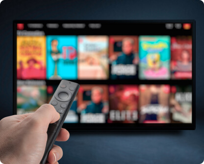

Hva betyr IPTV?
IPTV står for «Internet Protocol Television». I stedet for tradisjonell satellitt/kabel, leveres TV‑innhold via internett. Det gir rask kanalbytte, høy oppløsning (opp til 4K) og tilgang på et stort utvalg av norske og internasjonale kanaler.
Hvordan fungerer IPTV teknisk?
Innholdet leveres som datastrømmer til din enhet (Smart TV, Fire TV Stick, Android‑boks, mobil eller PC). Du bruker en IPTV‑spiller (app) som leser en M3U/XTREAM‑liste fra leverandøren og viser kanaler, filmer og serier. Alt går via internett, så stabil linje er viktig.

Er IPTV lovlig i Norge?
Det avhenger av leverandørens rettigheter. Lovlig IPTV betyr at innholdet distribueres med nødvendige avtaler. Vi anbefaler alltid å bruke seriøse leverandører og følge norske lover. Tjenesten vår fokuserer på stabilitet, kvalitet og rettighetsmessig trygg bruk.
Hvilken hastighet trenger jeg?
- HD‑kanaler: minst 10–15 Mbps
- Full HD (1080p): 20 Mbps
- 4K/UHD: 25–35 Mbps
Kablet nett (Ethernet) eller stabil 5 GHz‑Wi‑Fi anbefales for jevn avspilling.
Slik kommer du i gang
- Velg abonnementet som passer deg på pris‑siden.
- Installer anbefalt app (f.eks. TiviMate, IPTV Smarters).
- Legg inn brukernavn/passord eller M3U‑lenke fra leverandøren.
- Tilpass kanal‑favoritter og EPG (programguide) for norsk innhold.
Beste apper for Norge
For Android/Fire TV anbefales TiviMate; for iOS/Apple TV anbefales GSE eller IPTV Smarters. Se vår fullstendige sammenligning: Beste IPTV‑apper i Norge 2026.
Vanlige spørsmål (FAQ)
Hva er forskjellen mellom IPTV og strømmetjenester?
IPTV gir lineære kanaler + VOD i én løsning, mens strømmetjenester som Netflix kun tilbyr VOD. IPTV har ofte EPG og bred kanalpakke.
Kan jeg bruke IPTV på flere enheter?
Ja, du kan logge inn på flere enheter, men samtidige strømmer avhenger av abonnementet.
Hvorfor hakker bildet?
Årsakene kan være lav hastighet, ustabil Wi‑Fi eller for gammel app. Oppdater app, bruk kablet nett og sjekk hastigheten.